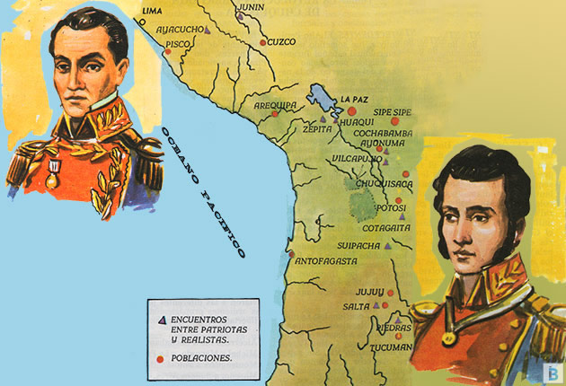

Independencia de Bolivia — 6 de agosto de 1825
El territorio de Bolivia se formó en base a pueblos aimaras que constituían el Kollasuyo, y que vivieron a orillas del Lago Titicaca, extendiendo su influencia hasta las costas del Océano Pacífico. Los pueblos que integraban el Gran Kollasuyo estaban los Ayaviri, el Colla, del que ha tomado nombre toda la región, los Omasuyos, los Lupacas, Larecajas, Pacajes, Charcas y Chichas.